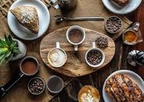
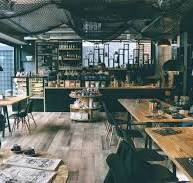
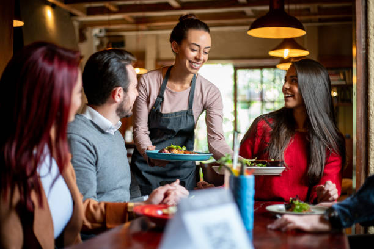

ABOUT US
At Bryan's Café, we believe in more than just serving food and drinks—we believe in creating an experience. Our café is not just a place to eat; it’s a place to connect, to unwind, and to be inspired. Our team is passionate about what we do, and it shows in every cup of coffee we brew, every dish we prepare, and every interaction we have with our customers. We source only the finest ingredients, locally and ethically whenever possible, to ensure that every bite and every sip is something special. From our signature coffees to our handcrafted baked goods and seasonal dishes, everything is made with care and attention to detail. We’re not just a café; we’re part of the community. Bryan's Café is proud to support local events, partner with nearby artisans, and give back through various community initiatives. Whether you're a regular customer or a first-time visitor, we invite you to be part of our story.OUR HISTORY
Founded in 2024, Bryan's Café began as a small neighborhood coffee shop with a big dream: to create a welcoming space where everyone could enjoy great coffee, delicious pastries, and heartfelt conversation. What started as a humble venture has since grown into a beloved gathering spot for locals and visitors alike. Over the years, we've stayed true to our roots—offering high-quality, freshly brewed coffee and homemade treats, all served with a smile. Whether you come in for a quick cup to-go or stay to savor a meal, Bryan's Café is your home away from home. From our early days of handcrafting lattes in our cozy, one-room café, we've expanded our menu and space, yet the heart of Bryan's Café remains unchanged—building community one cup at a time.
